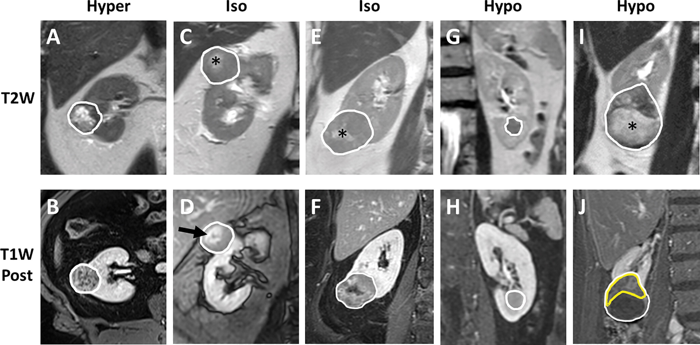
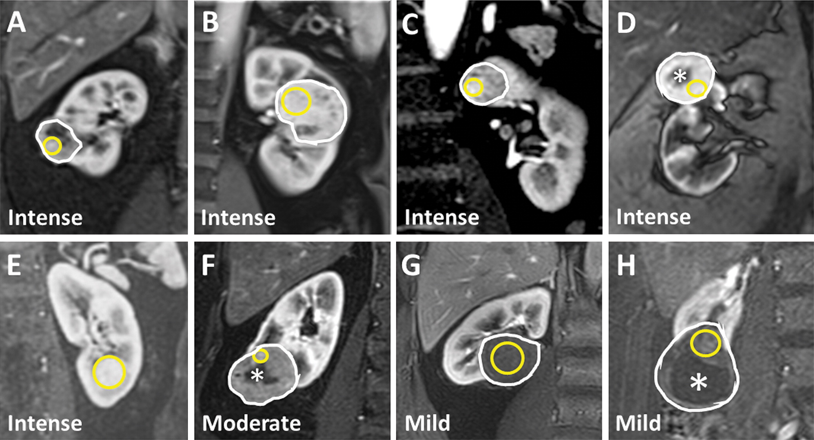
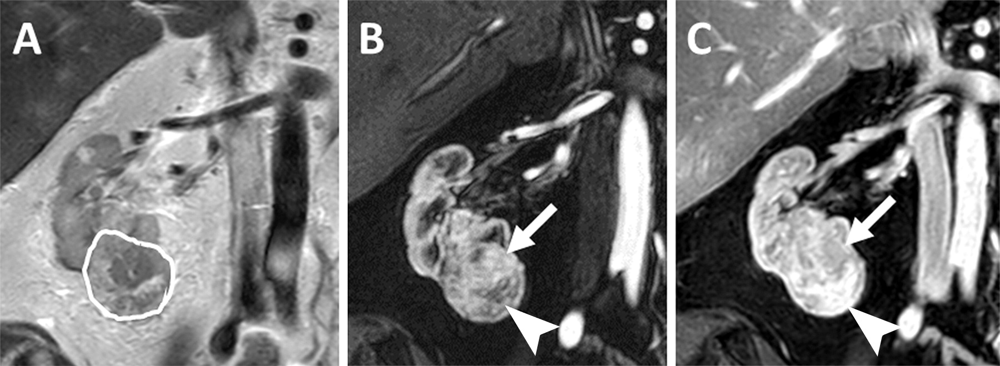

A standardized reporting template that applies the clear cell likelihood score (ccLS) algorithm.
To see a visual flowchart of the ccLS algorithm go here
For non-commercial and non-clinical purposes only. Use at your own risk.
Fields required to generate a clear cell likelihood score are denoted with the symbol which dynamically appears/disappears based upon inputs.
This algorithm is designed for solid (>25% enhancing component) renal masses without macroscopic (bulk) fat.
Please use the Bosniak classification for cystic (non-solid) masses.
Size of the mass
(AP) x
(LL) x
(CC) cm
Is prior imaging available?
Date of prior imaging:
Size on prior imaging:
(AP) x (LL) x (CC) cm
Location of the mass
Laterality:
Along CC dimension:
Along LL dimension:
Along AP dimension:
Depth Extension
T2 Signal Intensity
Assess T2 signal ONLY in enhancing component of tumor
Intensity Relative to Background Renal Cortex
Pattern of T2 Signal
×
T2 Signal Intensity
T2 Signal Intensity should be evaluated on single-shot fast spin-echo (ie, without fat saturation) based on the predominant signal in the enhancing component of the mass ≥2 minutes after contrast administration

(A, B) The mass has heterogeneous but diffuse enhancement. Thus, the mass is classified by its predominant hyerintense T2 signal (Hyper). (C, D) The mass enhances diffusely. There is central scar that enhances more intensely (arrow in D) with corresponding T2 hyperintense area (* in C). However, the predominant signal at T2-weighted imaging is isointense (Iso) to the renal cortex. (E, F) A small central T2 hyperintense area (* in E) does not enhance. However, the predominant T2 signal in the rest of the enhancing areas is isointense to the renal cortex. (G, H) The mass has diffuse homogeneous enhancement. Thus, T2 signal should be assessed across the entire mass and categorized as hypointense (Hypo). (I, J) A large T2 hyperintense area of cystic degeneration with hemorrhagic fluid (ie, precontrast T1 hyperintensity; not shown) is present inferiorly (* in I). This area does not enhance (J, T1-weighted postcontrast minus precontrast) and thus should be ignored. The predominant T2 signal in the enhancing component of the mass (yellow outline in J) is hypointense.
Enhancement Characteristics at Corticomedullary (CM) Phase
Assess area with the HIGHEST enhancement on CM phase
Compare between phases using identicaly acquired images (i.e. same sequence and resolution)
Degree of Enhancement Relative to Background Renal Cortex
Signal Intensity of the Tumor
Signal Intensity of Background Cortex
Tumor enhancement: TBD%
Cortex enhancement: TBD%
Tumor-Cortex Ratio: TBD%
Pattern of Enhancement
×
Corticomedullary Phase Enhancement
Analysis of enhancement on CM phase should be performed with an ROI (yellow circles) in the area of the renal mass that has the most subjective enhancement, avoiding areas with decreased enhancement, necrosis, hemorrhage, cystic degeneration, or portions of internal tumor vasculature.

(A) In a mass with heterogeneous enhancement, select the focal region with intense enhancement. (B) In a mass with diffuse intense enhancement, select the homogeneous region avoiding patchy hypointense foci. (C) In a mass with background moderate enhancement, select the focus of intense enhancement. (D) Avoid placing the ROI on a region of central non-enhacement (*). (E) A large ROI is appropriate for this mass with homogeneous intense enhancement. (F) Although the ROI is appropriately placed on the small focus of increased enhancement while avoiding an area of central non-enhancement (*), the enhancement was still moderate by ccLS criteria (G) A large ROI is appropriate for this mass with homogeneous, nearly imperceptably mild enhancement (H) Subtraction (CM phase - Precontrast) image helps visualize a region of mild enhancement, avoiding an area of cystic degeneration with hemorrhagic fluid (*) which was hyperintense on Precontrast T1 image (not shown).
T1 Chemical Shift
In-Phase Imaging
Opposed-Phase Imaging
The calculated 2 standard deviation difference is TBD
Microscopic fat is present if the difference is positive.
Diffusion Weighted Imaging (DWI) Characteristics
Assess on high b-value DWI sequence (i.e. 800 sec/mm2)
DWI Signal Relative to Background Renal Cortex
Apparent Diffusion Component (ADC) Map Signal Relative to Background Renal Cortex
Is Segmental Enhancement Inversion (SEI) Present?
×
Segmental Enhancement Inversion
Presence of segmental enhancement inversion refers to a renal mass that demonstrates areas of both hyperenhancement and hypoenhancement during the corticomedullary phase that respectively become relatively hypoenhancing and hyperenhancing, during later phases after contrast administration.

(A) This mass is heterogeneous although predominately T2 hyperintense. (B, C) Post-contrast images in the (B) corticomedullary and (C) late nephrographic phase demonstrates regions of hyperintensity on CM phase that relatively washout at late nephrographic phase (arrow) as well as regions of hypoenhancement on CM phase that develop relatively intense enhancement at late nephrographic phase (arrowhead). This is segmental enhancement inversion.
Is Tumor Washout Present?
Assess for the relative "washout" of the tumor on delayed post-contrast phase (i.e., Arterial-Delayed Enhancement Ratio (ADER) ≥ 1.5)
Compare between phases using identicaly acquired images (i.e. same sequence and resolution)
A ___ cm, stage ___ enhancing solid ___ renal mass. MRI findings ___.
References
Pedrosa I, Cadeddu JA. How We Do It: Managing the Indeterminate Renal Mass with the MRI Clear Cell Likelihood Score. Radiology. 2021 Dec 14;210034. doi: 10.1148/radiol.210034
Kay FU, Pedrosa I. Imaging of Solid Renal Masses. Radiol Clin North Am. 2017;55(2):243-58. doi: 10.1016/j.rcl.2016.10.003
Canvasser NE, Kay FU, Xi Y, Pinho DF, Costa D, Diaz de Leon A, Khatri G, Leyendecker JR, Yokoo T, Lay A, Kavoussi N, Koseoglu E, Cadeddu JA, Pedrosa I. Diagnostic Accuracy of Multiparametric Magnetic Resonance Imaging to Identify Clear Cell Renal Cell Carcinoma in cT1a Renal Masses. J Urol. 2017;198(4):780-6. doi: 10.1016/j.juro.2017.04.089
Diaz de Leon A, Davenport MS, Silverman SG, Schieda N, Cadeddu JA, Pedrosa I. Role of Virtual Biopsy in the Management of Renal Masses. AJR Am J Roentgenol. 2019:1-10. doi: 10.2214/AJR.19.21172